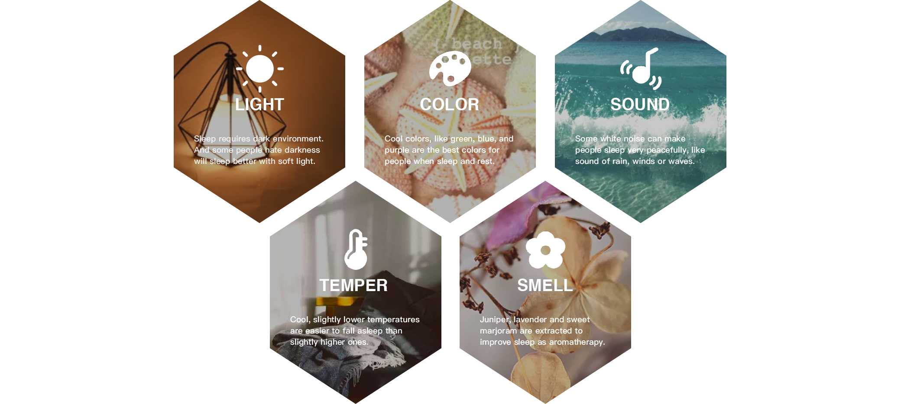
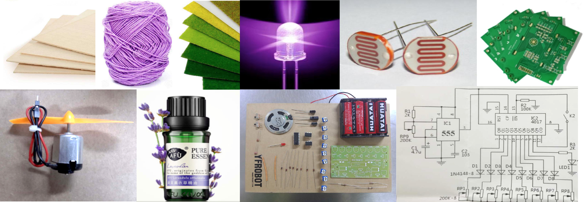
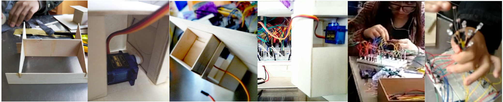
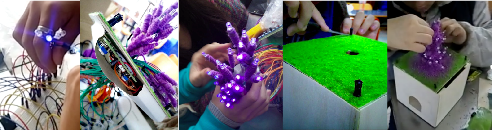
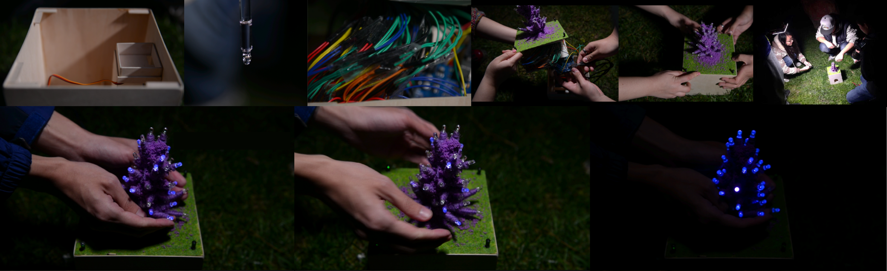

To improve the quality of sleeping, we designed a interactive night lamp. People can not only play with it before going to bed, but also can comfort by its violet light. lavendern aroma, white noise sound and warm temperature. We hope that it will allow the people who seek peaceful nights to regain sweet dreams.
At that time, one of my roommates had been under a lot of stress in her close relationship, so that her sleep is bad. A slight noise will make her awake, and last long insomnia made she feel terrible.
After doing some research, I realized that modern people had various sleep problems in recent years. So we decided to make an installation that can help people to regain good sleep.
Take the meaning of lavender and lantern, we named it Lavendern. The fragrant essential oil for sleep, as well as the peaceful lavender light will bring people fairytale nights and sweet dreams.
To hold the Lavendern lamp, the user's action motion triggers a series interaction with devices.By combining the soft light,white noises sound, lavander aroma, warm temperature and other healing elements together, we want to make users relax from sight, smell, hearing and touch, so as to achieve a better cure effect.
There was a study about to compare the effectiveness of lavender (Lavandula angustifolia) and sleep hygiene versus sleep hygiene alone on sleep quantity and sleep quality and to determine sustained effect at two-week follow-up.
As a result, lavender and sleep hygiene together, and sleep hygiene alone to a lesser degree, improved sleep quality for college students with self-reported sleep issues, with an effect remaining at follow-up.
So, if we want to improve our sleep quality, we should practice good sleep hygiene, and lavender is also helpful.
REFERENCE: J Altern Complement Med. 2015 Jul;21(7):430-8.
Base Bed: 2mm plank * 6 / Model tree powder / sand table grass powder / lawn lamps * 4 Light: Violet light diode * 35 / Photoresistance * 5 / purple woolen yarn Smell: Lavender oil and sponge / Motor and fan kits Sound: Electronic music box kit Circuit: Arduino open source platform / Bread Board / Some wires / AA battery in PRC * 4
Make the bed with 2mm thick wooden board and fix the motor on it. Connect the circuit board with a breadboard, and then connect the motor, fan, music box, photosensitive resistor, and purple led lights one by one.
Connect the battery to make sure that circuit access. Put the breadboard and the entire circuit into the base to fix them. Twist the bottle cap of the lavender oil and place the bottle into the corresponding groove.
Drill the center of the bed cover and attach the sand table grass to the cover’s surface. Then pass led and photosensitive through the middle of the hole piercing, fix them at different heights. After that, bind the woolen yarn around the led and wires to make a look of lavender. And then put the lid on the box, and stick the grass lamps.
Finally, our project finished!
Cover the roots of lavender——Trigger photoresistors——Diode lights turn on——Print the resistance value——Pass the motor signal——volatile essential oil——music box sound
